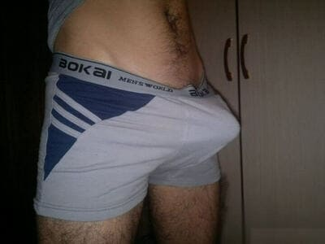

Dobrá erekce až do věku 75 let je samozřejmostí! Jak se zbavit všech problémů s potencí jednou a provždy? Pro ženaté muže je náš přípravek k dispozici se slevou! Akce platí do včetně!
Pro začátek malé nahlédnutí do statistiky: 7 z 10 mužů nad 35 let pravidelně čelí problémům s erekci. Může to být jak částečná, tak úplná ztráta erekce, předčasná ejakulace, snížená citlivost, neschopnost dosáhnout orgasmu během pohlavního styku.
Impotence je příčinou hádek, nevěry a dokonce rozvodů!
Dobrý den, vážení!
Dnes jsem se rozhodl nastolit velmi delikátní, ale zároveň nesmírně důležité
téma – mužské zdraví. Velmi často mě žádají, abych
pověděl o moderních prostředcích na zlepšení erekce.
Zajímavé
je, že tyto otázky většinou kladou ženy, které chtějí svým manželům
pomoci zvládnout tento závažný problém. Muži mají často tendenci k
podcenění problému, dokonce i když potřeba léčby pro ně je naprosto zřejmá,
tak nespěchají k lékaři. Lze je pochopit, nikdo nechce mluvit o takové intimní
věci s cizím člověkem, i když je to lékař. Proto dnes budu vyprávět o tom, jak
rychle a bezpečně vrátit erekci, aniž byste se museli obrátit na odborníky, používat
chemické prostředky nebo podstoupit operaci.
Bohužel, je třeba poznamenat, že problémy v sexuálním životě moderních mužů se objevují mnohem dříve. K „selhání“ začíná docházet již po 35 letech ale někdy i v mladším věku. Pokud se muž nestará o své zdraví, pak bohužel v průběhu let na něj čeká impotence. Po několika neúspěších v sexu muži nejčastěji začínají užívat VIAGRU a další podobné syntetické léky, ale to se dělat nemá! Viagra a podobné prostředky skutečně zaručují silnou erekci, ale pouze krátkodobě. Tyto prostředky neléčí! Navíc v průběhu času muži ztrácí důvěru ve své vlastní síly a už se nedokážou obejít bez kouzelných tablet.

Snad každý zná příběhy celebrit - mužů, kteří již v úctyhodném věku mají mladé milenky nebo si berou dívky mnohem mladší než oni sami. Navíc v takových manželstvích se rodí děti, muži jsou celé bez sebe radostí a jejich mladé ženy se hrdě chlubí sexuálními úspěchy svého manžela. Jak to dokážou? Opravdu to vše díky viagře a podobným prostředkům? Ovšem že ne! Měl jsem možnost položit tuto citlivou otázku takovým mužům a poprvé jsem od nich slyšel o úžasném prostředku . Skládá se z přírodních složek. Až donedávna tento mocný prostředek se dalo koupit pouze v zahraničí a to za velké peníze, nyní je však k dispozici pro všechny a zároveň neztratil na kvalitě.
V Česku se podařilo prosadit státní program. Cílem programu je poskytnout každé osobě možností řešit problémy s erekcí, dokud se nevyvinou do závažnější formy, a to bez ohledu na jejich finanční situaci. V rámci tohoto státního programu výrobce nabízí se slevou až 50%!
Akce platí do včetně! Chcete-li objednat tento unikátní prostředek, stačí zadat své jméno (vše je důvěrné) a telefonní číslo pro komunikaci na oficiálních webových stránkách výrobku.
Před zahájením prodeje u v Čechách trvalo hodně času
provedení
laboratorních testů. Byly získány veškeré potřebné
certifikáty o schodě, bezpečnosti a účinnosti léčby. Rozsáhlá
klinická studie byla rovněž prováděna na dobrovolnících v českém
ústavu NLU Urologie, která také ukázala vynikající
výsledky.
skutečně funguje, ale na rozdíl od třeba viagry poskytuje okamžitý a trvalý
efekt, který přetrvává po dobu 5 hodin po jednom užití. Nyní se
podívejme na hlavní účinky, na něž se můžete spolehnout při použití
Urotinu:
1. Posílení erekce: sexuální vzrušení se dostaví okamžitě, stabilní erekce během pohlavního styku trvá 2 až 3 hodiny.
2. Prodloužení pohlavního styku: doba pohlavního styku se výrazně zvyšuje na 2 až 3 hodiny. To je velmi důležité, protože pokud muž dosáhne orgazmu příliš rychle, pak žena nepocítí plné sexuální uspokojení.
3. Zvýšení sexuální touhy: důležité pro muže v pokročilém věku, sexuální touha se probouzí mnohem častěji a výrazně se zvyšuje.
4. Kvalita spermií: značně se zvyšuje kvalita a množství spermií, které jsou ejakulovány při orgasmu.
5. Bouřlivý orgasmus: díky zvýšení citlivosti penisu a povzbuzení libida podstatně zesiluje mužský orgasmus.
Často se mě ptají, zda je možné mít dobrou potenci a dosáhnout kvalitní, stabilní erekce ve věku 50 let. Samozřejmě, že ano! A co víc, je pro muže v tomto věku pravidelný sexuální život naprostou normou! Řeknu vám, že dokonce i ve věku hodně přes 60 lze obnovit erekci pomocí takových přírodních prostředků, jako je , po použití kterého si můžete užívat sex doslova hodiny. Je velmi důležité, že tento prostředek je zcela přírodní a bezpečný pro zdraví, lze ho používat v jakémkoli věku. Kromě toho je ideální pro mladé lidi, kteří se potýkají s problémy v sexu. V jejich případě problém je spíš psychologický, v pochybnostech o sobě nebo nezkušeností. Po užití u dojde k silné erekci i přes nervozitu a stres!
Abych to shrnul, chci ještě jednou apelovat na starší muže, kteří teď mají mladé ženy a dívky. Nedovolte, aby se vyskytly problémy s potencí, nezapomeňte, že sex a sexuální uspokojení jsou nesmírně důležité pro všechny ženy, a to zejména pro mladé. Pokud nebudete mít pravidelný a kvalitní sex, uděláte svoji drahou polovičku nešťastnou! V budoucnu to může skončit nevěrou a dokonce i rozvodem.
Pozor! Případy prodeje padělků , které nemají žádné léčivé účinky, jsou stále častější! Proto na naších stránkách máte k dispozici speciální formulář pro objednání od jediného oficiálního dodavatele! Pokud objednáte zde, máte jistotu, že získáte kvalitní výrobek.
Pro diváky i čtenáře pana doktora Jana Voleka je tu speciální akce, v rámci které lze objednat se slevou 50%. Pokud si přejete objednat tento unikátní prostředek, klikněte na tlačítko „ se slevou 50%“.

Komentáře::(47/47)
Manželovi bylo již 65 let ale problémy s potenci ho trápily delší dobu. Štěstí, že mi přítelkyně doporučila , tento přípravek pomohl její manželovi. Zabralo to už první den. Manžela to hned povzbudilo, teď vypadá spokojeně.
Děkuji moc za informace o tak skvělém prostředku. Přemluvila jsem svého manžela, abychom koupili . Začal ho užívat, a najednou se zbavil problémů s prostatou.
Nemohl jsem se nevšimnout této recenze... Petro, vůbec není zač! Ani nevíte jakou mám radost z vás a vašeho manžela! Není nic důležitějšího než dobré zdraví a mužské zdraví je velmi křehké. Opatruj se.
je rozhodně lepší než jiné prostředky. Koupil jsem ho výhradně kvůli složení, je přírodní a neškodí organizmu. jsem užíval podle návodu a hned jsem pocítil úlevu. Vřele doporučují.
Můj manžel a já jsme se o tomto přípravku dozvěděli už dávno. Poprvé se problémy objevily po 60 letech, takže jsme koupili , když jsme byli na dovolené v zahraničí. Pak jsme litovali, že jsme koupili jen jedno balení, protože výsledek překonal všechna očekávání!
je opravdu skvělá věc, poradil mi ho přítel, když jsem se na jednom večírku přiznal, že bez viagry už se mi nepostaví. Tak jsem ten začal užívat a stabilní erekce se velmi rychle vrátila a navíc ještě silnější než předtím, Tak doufám, že už navždy )) Hele, kluci, objednávejte dokud je k dispozici za tuto dobrou cenu v akci.

Objednal jsem na oficiálních stránkách, a musím říct, že velmi dobře pomáhá. Ani nebyla zapotřebí masáž prostaty.
Mému manželovi pomohl, myslím, že i ostatním mužům určitě pomůže.
Začal jsem užívat a najednou se mi vrátil sexuální život. Ale já jsem ho vlastně začínal brát kvůli prostatě.
Erekce je zpět, což už se dávno nestalo. Cítím se skvěle. Nastartoval jsem znovu sexuální život, a je to fakt úžasné. Děkuji, .
Už jsem se chystal na masáž prostaty, ale měl jsem kliku, že mi doporučili nejdříve vyzkoušet . Zánět zmizel jako nic.
Pomáhá jak proti prostatě, tak i pro potenci. Zkusil jsem to na sobě a vše funguje jak má. Jen je nutné absolvovat celou kůru a nepřerušovat jí. Jen tak to pomůže.
Manželovi to hodně pomohlo! Viděla jsem, že se na něj neustále valí deprese, zvláště když jsme se snažili, zkoušeli to ale nic nefungovalo... Nyní je erekce normální a je to úplně jiný člověk, veselý, optimistický!!! Pak se přiznal, že se trápil s prostatou, a jak se mu ulevilo, když začal brát .
Právě jsem objednala pro svého manžela na oficiálních stránkách výrobce.
Díky za tip, objednávám.
Znovu opakuji, že přípravek „“ lze objednat POUZE na oficiálních stránkách výrobce. Dejte si pozor na padělky! Na oficiálních stránkách se dost často konají propagační akce a lze zakoupit přípravek se slevou až 50%.